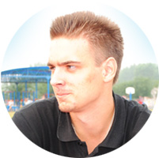
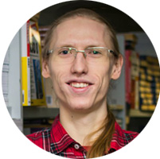
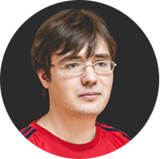
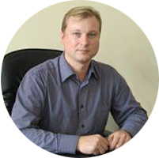

Институт космических и информационных технологий ФГАОУ ВО «Сибирский федеральный университет» прu поддержке корпорации InterSystems проводит I Всероссийскую летнюю школу «Профессиональный старт»,
которая состоится 11 – 29 июля в г. Красноярске, и приглашает принять участие студентов ИТ-направлений подготовки.
Изучаемые технологии и платформы:
Caché, DeepSee, JSON, REST, AngularJS, Twitter Bootstrap
Школа пройдет в формате интенсивного обучения с применением современных проектных и практико-ориентированных методов.
Участники школы получат уникальный опыт работы в команде под управлением наставников.
Вы изучите базовые технологии, необходимые и достаточные для разработки современных веб-приложений. Каждому участнику или команде выдаются индивидуальные задания и прикрепляется индивидуальный наставник. Результатом обучения станет веб-приложение, выполненное каждым участником или командой.
Успешные проекты получат грантовую поддержку от корпорации InterSystems,
а участники — возможность пройти стажировку в Москве и за рубежом.
По результатам обучения выдаются сертификаты.
| 23 мая 2016 г | запущен сайт мероприятия «Профессиональный старт 2016». |
|  Погребников Александр |
 Речитский Андрей |
 Спиридонов Сергей |
 Якунин Юрий |
| 20 июня | Крайний срок подачи заявки на участие |
| 25 июня | Объявление результатов конкурсного отбора |
| 10 июля | Заезд на Школу |
| 11 – 15 июля | Изучение курса «Caché. Разработка приложений» Разработка БД для выбранного проекта |
| 16 – 17 июля | Свободное время. Экскурсия. |
| 17 – 22 июля | Курс «Caché. Разработка web-приложений». Разработка прототипа приложения для выбранного проекта. |
| 23 -24 июля | Свободное время. Экскурсия. |
| 25 – 29 июля | Курс «DeepSee. Основы». Расширение выбранного проекта аналитическими функциями. Разработка других функций приложения. 29 июля – Защита проектов. Закрытие Школы. Гала-ужин. |
| 30 июля | Отъезд со Школы |
К участию в Школе приглашаются студенты 2-5 курсов бакалавриата и специалитета и 1-2 курсов магистратуры ИТ-направлений.
-- Необходимо владеть навыками объектно-ориентированного программирования на одном из языков.
-- Уметь разрабатывать реляционные базы данных для одной из СУБД.
-- Желательно иметь представление об HTML и JS.
-- Знание английского языка приветствуется, но не является обязательным.
Желающим принять участие необходимо заполнить регистрационную форму участника Зачисление в число слушателей школы осуществляется на конкурсной основе.
РЕГИСТРАЦИЯ ОБЯЗАТЕЛЬНА.
Участники школы самостоятельно оплачивают дорогу до места проведения Школы и обратно.
Организаторы Школы оплачивают:
В выходные дни участники Школы самостоятельно оплачивают себе питание, перемещение по городу.
В выходные дни планируется проведение двух экскурсий. Все расходы по их организации берет на себя InterSystems.
В этом разделе собрана полезная повседневная информация.
| 8:30 – 9:00 | Трансфер от общежития к УЛК ИКИТ |
| 9:00 – 10:00 | Завтрак |
| 10:00 – 13:00 | Учебные занятия |
| 13:00 – 14:00 | Обед |
| 14:00 – 18:00 | Учебные занятия |
| 18:00 – 19:00 | Ужин |
| 19:00 – 19:30 | Трансфер от УЛК ИКИТ к общежитию |
Сибирский федеральный университет – один из ведущих российских вузов, выполняющий подготовку по 150 направлениям бакалавриата, специалитета и магистратуры и 121 специальности аспирантуры. В СФУ обучается 31 тыс. студентов, работает 3,5 тыс. преподавателей. Институт космических и информационных технологий, на базе которого проводится летняя школа, является одним из ведущих вузов Сибирского федерального округа в области ИТ, подготавливаетющий специалистов высокого класса, востребованных на рынке труда в России и зарубежом.
Одно из приоритетных направлений работы корпорации InterSystems — содействие образовательной и исследовательской деятельности учебных заведений в области подготовки высококвалифицированных ИТ-специалистов. В компании разработана академическая программа University Outreach Program, в которой участвуют студенты и молодые специалисты десятков университетов на всех континентах, в том числе более чем из 70 вузов России, СНГ, Украины и стран Балтии. Для них читаются отдельные лекции и целые курсы, предлагается грантовая программа и проводятся конкурсы, открывающие перед студентами новые возможности, позволяющие проявить себя на профессиональном уровне и заложить прочную основу дальнейшей карьеры.